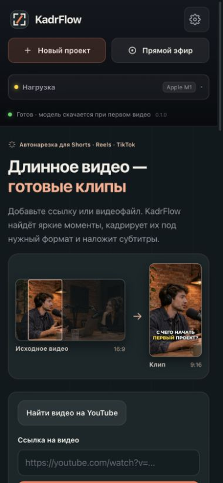
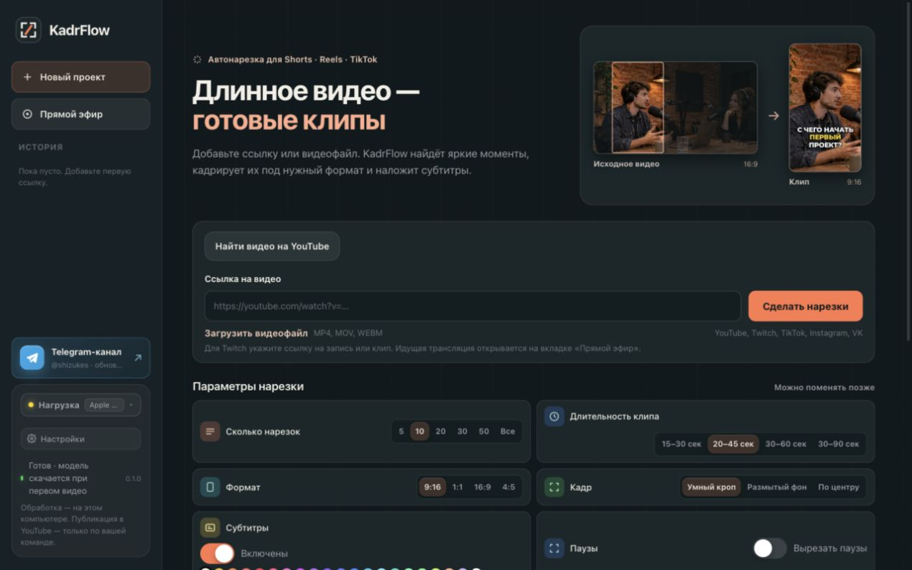
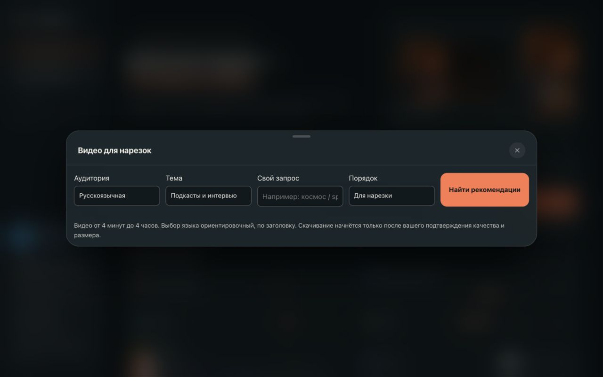
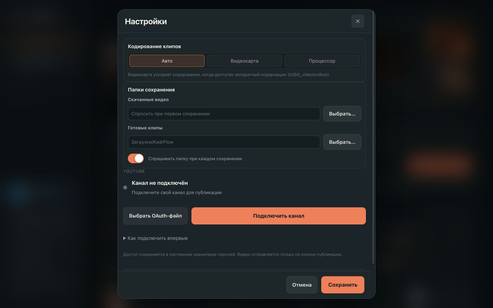
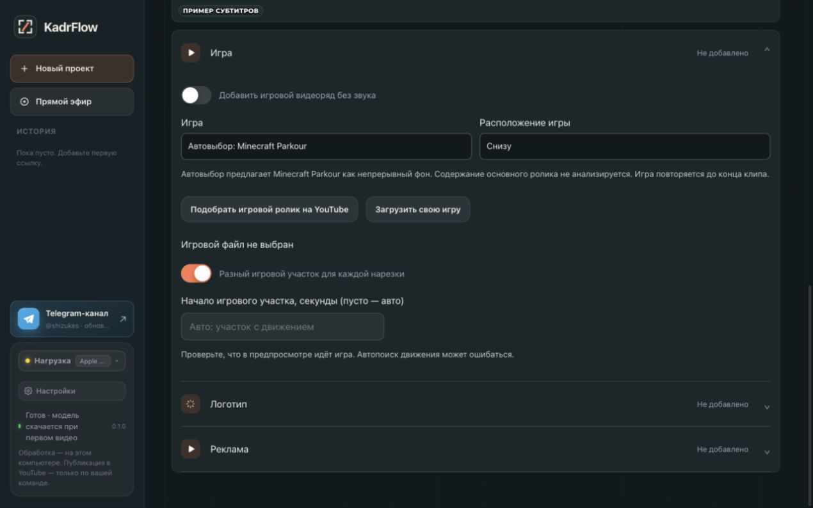
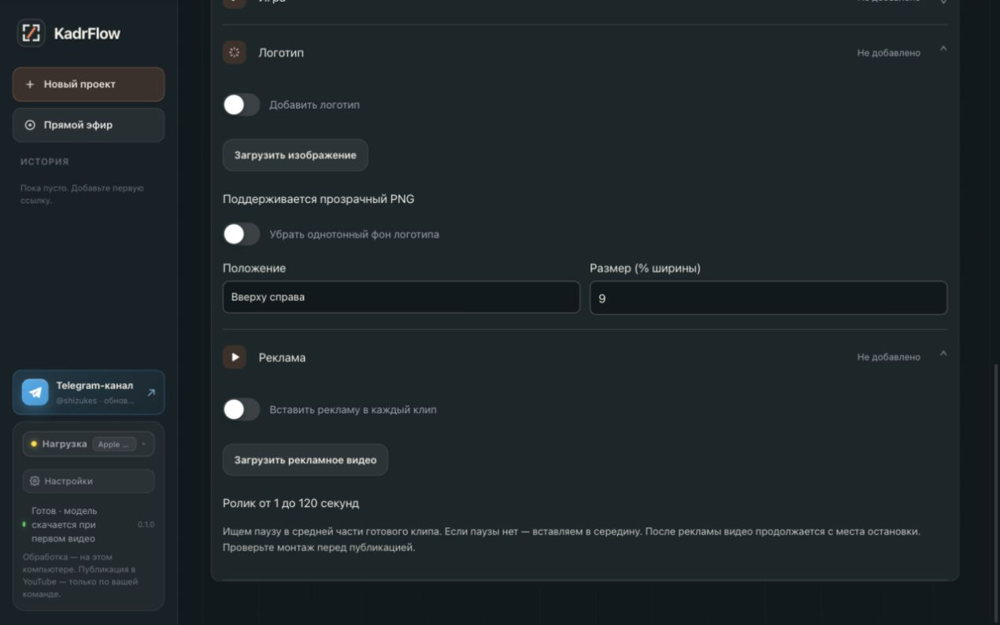

Длинное видео —
готовые клипы
Подкасты, интервью, вебинары и стримы — в готовые вертикальные Shorts, Reels и TikTok. Сам находит моменты, кадрирует по лицу и накладывает караоке-субтитры.

Весь путь от исходника до клипа
Вставили ссылку — получили пачку вертикальных роликов с хуком, субтитрами и умным кадром. Всё на вашем компьютере.
Находит моменты сам
Речь, паузы, громкость, эмоции и цифры. Пересекающиеся фрагменты отбрасываются, слабые — не попадают в пачку.
Умный кроп 9:16
Следит за лицом и не режет говорящего. Если лица нет — аккуратный размытый фон вместо чёрных полос.
Караоке-субтитры
Подсветка слов, спокойный темп, 24 шрифта и загрузка своих TTF/OTF. Цвет, размер и позиция — в редакторе.
До 50 клипов за раз
Один запуск — пакет на неделю публикаций. Каждый клип можно поправить и перерендерить отдельно.
Прямой эфир — на лету
Клипы появляются, пока стрим ещё идёт. Готовый клип можно перерендерить из записи, даже если исходника нет.
Приватно по умолчанию
Обработка и рендер выполняются локально. Внешние запросы нужны для поиска и загрузки источников; отправка на YouTube начинается по вашему выбору.
Монтажный стол без лишнего шума
Настройки собраны в одном месте, прогресс виден, а редактор открывается прямо на клипе.





Четыре шага до готовых файлов
Ссылка или файл
YouTube, Twitch, TikTok, VK, X, прямой mp4/m3u8 или файл с диска.
Распознавание
Whisper Small с таймингами слов. Длинные видео — частями, без зависаний.
Моменты и кроп
Скоринг вирусности, отбор без пересечений, кадрирование по лицу.
Рендер и экспорт
MP4 1080×1920, субтитры, хук. Скачать по одному или всё ZIP.
Исходники для macOS и Windows
Скачайте исходный код и запустите локальный сайт. Первый запуск установит зависимости; модель речи может скачаться при обработке.
KadrFlow для Mac
M1 / M2 / M3 / M4. Запустите ./run.sh в папке проекта.
KadrFlow для Windows
Распакуйте и выполните py -3.12 run_web.py в PowerShell.
Нужен интернет?
Интернет нужен для поиска и скачивания видео, проверки обновлений и публикации на YouTube. Нарезка, распознавание и рендер идут локально.
Куда уходят видео и звук?
Проекты хранятся локально в папке data при запуске из исходников. На YouTube загружается только выбранный вами готовый клип после подтверждения.
Можно свои шрифты?
Да, TTF/OTF загружаются в редакторе и шаблоне. В комплекте 24 шрифта, включая рукописные и спортивные.
Есть готовая сборка?
Пока опубликованы исходники. Для запуска в браузере нужен Python 3.12. Проверенные сборки появятся в разделе Releases.